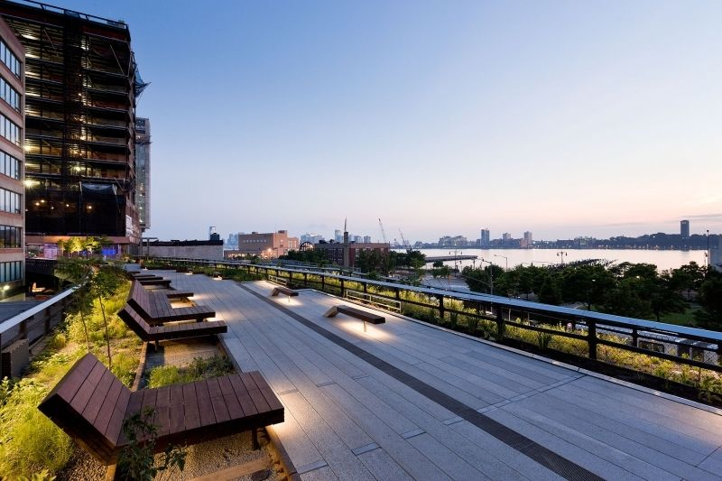

Events
-

Go to the Highline in Manhattan for FREE!
High Line
Today it’s an urbanite’s playground planted with wildflowers and grasses, offering walkers some of the best views in NYC, and that makes the park simultaneously removed from the city and an inextricable part of it. -

Go to The Museum of Natural History!
The Museum of Natural History
The American Museum of Natural History, located on the Upper West Side of Manhattan, New York City, is one of the largest museums in the world. -
Go to the Brooklyn Museum!
Brooklyn Museum
At the Brooklyn Museum you can explore an extensive and comprehensive permanent collection that includes ancient Egyptian masterpieces, African art, European painting, decorative arts, period rooms, and contemporary art. -
Go to the New York Aquarium!
New York Aquarium
The New York Aquarium is the oldest continually operating aquarium in the United States, having opened in Castle Garden in Battery Park, Manhattan in 1896. -
Go to the New York Hall of Science!
New York Hall of Science
The New York Hall of Science, also known as NYSCI, is a science museum located in Flushing Meadows-Corona Park in the New York City borough of Queens. -

Go to Corona Park!
Corona Park
The largest park in Queens, it offers plenty of space for whatever your recreational desires may be baseball, soccer, tennis, cricket, et cetera. Lots more too, including a stunning recreation complex, a zoo, an art museum, a botanical garden, a science museum, and a baseball stadium. -
Go to the Sagamore Hill!
Sagamore Hill
Sagamore Hill was the home of the 26th President of the United States, Theodore Roosevelt, from 1885 until his death in 1919. -
Go to Long Beach!
Long Beach
Long Beach is a very special place, known for its white sandy beaches and its iconic boardwalk which was rebuilt after Superstorm Sandy. The Beach is not all we have to offer. The Long Beach community possesses a wide variety of cultural and recreational activities for our residents and visitors to enjoy. -
Go to the New York Botanical Garden!
The New York Botanical Garden
The New York Botanical Garden is a botanical garden and National Historic Landmark located in the Bronx, New York City. The 250-acre site's verdant landscape supports over one million living plants in extensive collections. -
Go to Wave Hill!
Wave Hills
Wave Hill is a 28 acres estate in the Hudson Hill section of Riverdale, Bronx, in New York City. -
Go to Roosevelt Island!
Roosevelt Island
Roosevelt Island may be one of the only spots in New York City that’s a joy to get to via public transportation. The area's attractions include tennis courts, ball fields and Franklin D. Roosevelt Four Freedoms Park, a tribute to our 32nd President, located on the island's southern tip. -

Go to the Staten Island Zoo!
Staten Island Zoo
The Staten Island Zoo is an 8-acre suburban zoo in West New Brighton, Staten Island, New York City. -
Go to Staten Island Ferry!
Staten Island Ferry
It runs 5 miles in New York Harbor between the New York City boroughs of Manhattan and Staten Island. The ferry operates 24/7 and gives you a view of the Statue of Liberty. -
Go to the Rockefeller Center!
Rockefeller Center
You’ll find plenty of iconic New York sites in this multiblock complex: The ground level alone is home to the tourist-packed ice-skating rink, the bronze Atlas statue and the Today show plaza. -
Go to the Rockefeller Center Pubic Art!
Rockefeller Center Public Art
Rockefeller Center is home to a remarkable collection of art deco motifs and sculptures signifying man’s development in spirit, science, industry and more. Learn all about the Center’s most famous artworks—and how Rockefeller’s vision was ultimately realized.
{kind=link}
{kind=link}
{kind=link}
{kind=link}
{kind=link}
{kind=link}
{kind=link}
{kind=link}
{kind=link}
{kind=link}
{kind=link}